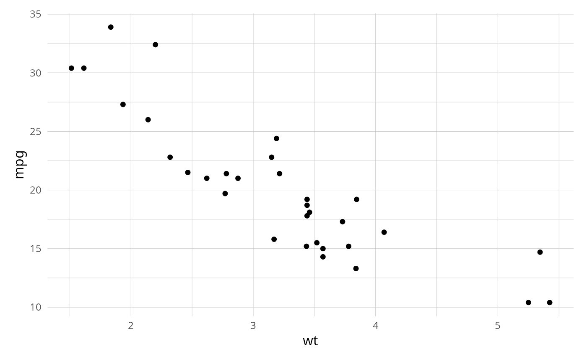
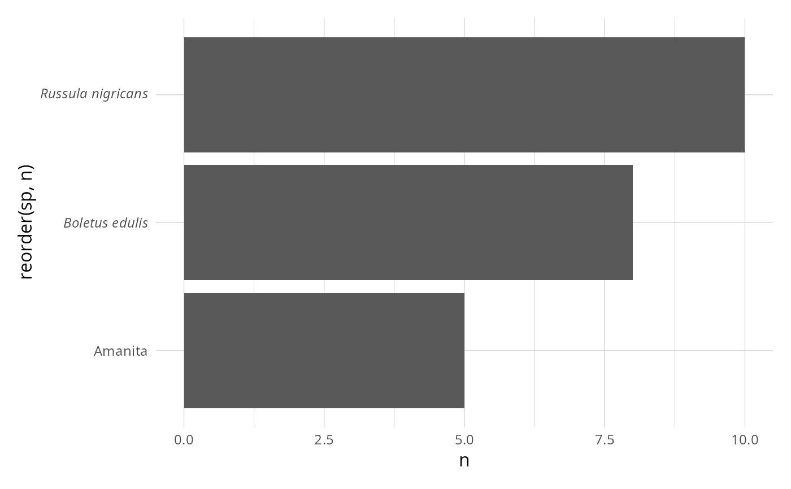

<a href="https://adrientaudiere.github.io/MiscMetabar/articles/Rules.html#lifecycle"> <img src="https://img.shields.io/badge/lifecycle-experimental-orange" alt="lifecycle-experimental"></a>
This theme is used by Adrien Taudiere [IdEst](https://adrientaudiere.com/). Based on [hrbrthemes](https://github.com/hrbrmstr/hrbrthemes/tree/master) `hrbrthemes::theme_ipsum()` by boB Rudis.
Usage
theme_idest(
sans_family = if (.Platform$OS.type == "windows") {
"Roboto Condensed"
} else {
"Roboto Condensed Light"
},
serif_family = "Linux Libertine G",
mono_family = "Fira Code",
base_size = 11.5,
plot_title_family = serif_family,
plot_title_size = 18,
plot_title_face = "bold",
plot_title_margin = 10,
subtitle_family = serif_family,
subtitle_size = 13,
subtitle_face = "plain",
subtitle_margin = 15,
subtitle_color = "grey30",
strip_text_family = mono_family,
strip_text_size = 13,
strip_text_face = "plain",
strip_back_grey = FALSE,
caption_family = sans_family,
caption_size = 9,
caption_face = "plain",
caption_margin = 10,
axis_text_size = base_size * 0.8,
axis_text_family = sans_family,
axis_title_family = mono_family,
axis_title_size = 12,
axis_title_face = "plain",
axis_title_just = "c",
plot_margin = margin(12, 12, 12, 12),
panel_spacing = grid::unit(1.2, "lines"),
grid_col = "#cccccc",
grid = TRUE,
axis_col = "#cccccc",
axis = FALSE,
ticks = FALSE,
x_is_species_name = FALSE,
y_is_species_name = FALSE
)Arguments
- sans_family
Font family for sans serif text (default is "Roboto Condensed" on Windows and "Roboto Condensed Light" on other OS).
- serif_family
Font family for serif text (default is "Linux Libertine G").
- mono_family
Font family for monospaced text (default is "Fira Code").
- base_size
Base font size (default is 11.5).
- plot_title_family
Font family for title (default is serif_family).
- plot_title_size
Font size for title (default is 18).
- plot_title_face
Font face for title (default is "bold").
- plot_title_margin
Margin below title (default is 10).
- subtitle_family
Font family for subtitle (default is serif_family).
- subtitle_size
Font size for subtitle (default is 13).
- subtitle_face
Font face for subtitle (default is "plain").
- subtitle_margin
Margin below subtitle (default is 15).
- subtitle_color
Font color for subtitle (default is "grey30").
- strip_text_family
Font family for facet strip text (default is mono_family).
- strip_text_size
Font size for facet strip text (default is 13).
- strip_text_face
Font face for facet strip text (default is "plain").
- strip_back_grey
Logical, whether to use grey background for facet strips (default is FALSE).
- caption_family
Font family for caption (default is sans_family).
- caption_size
Font size for caption (default is 9).
- caption_face
Font face for caption (default is "plain").
- caption_margin
Margin above caption (default is 10).
- axis_text_size
Font size for axis text (default is 80% of base_size).
- axis_text_family
Font family for axis text (default is sans_family).
- axis_title_family
Font family for axis titles (default is mono_family).
- axis_title_size
Font size for axis titles (default is 12).
- axis_title_face
Font face for axis titles (default is "plain").
- axis_title_just
Justification for axis titles (default is "c" for center).
- plot_margin
Margin around the plot (default is margin(12, 12, 12, 12)).
- panel_spacing
Spacing between panels (default is unit(1.2, "lines")).
- grid_col
Color for grid lines (default is "#cccccc").
- grid
Logical or character, whether to show grid lines (default is TRUE).
- axis_col
Color for axis lines (default is "#cccccc").
- axis
Logical or character, whether to show axis lines (default is FALSE).
- ticks
Logical, whether to show axis ticks (default is FALSE).
- x_is_species_name
Logical (default FALSE). If TRUE, automatically apply [scale_x_italic_species()] so that binomial species names on the x-axis are rendered in italic. When set, the function returns a list (theme + scale) rather than a bare theme; ggplot2 unpacks the list automatically when added with `+`.
- y_is_species_name
Logical (default FALSE). Same as `x_is_species_name` but for the y-axis.
Value
When both `x_is_species_name` and `y_is_species_name` are `FALSE` (the default), a ggplot2 theme object. When either flag is `TRUE`, a list containing the theme object and one or two `scale_*_discrete(labels = label_italic_species)` objects, which ggplot2 automatically unpacks when added with `+`.
Examples
library(ggplot2)
ggplot(mtcars, aes(wt, mpg)) +
geom_point() +
theme_idest()
#> Warning: `theme_idest()` was deprecated in taxinfo 0.2.0.
#> ℹ Please use `ggplotpq::theme_idest()` instead.

# Italic species names on y-axis (e.g. after coord_flip())
df <- data.frame(
sp = c("Russula nigricans", "Amanita", "Boletus edulis"),
n = c(10, 5, 8)
)
ggplot(df, aes(x = n, y = reorder(sp, n))) +
geom_col() +
theme_idest(y_is_species_name = TRUE)
#> theme_idest: applying italic species labels to the y-axis. If species names are on the x-axis, use `x_is_species_name = TRUE` instead.
